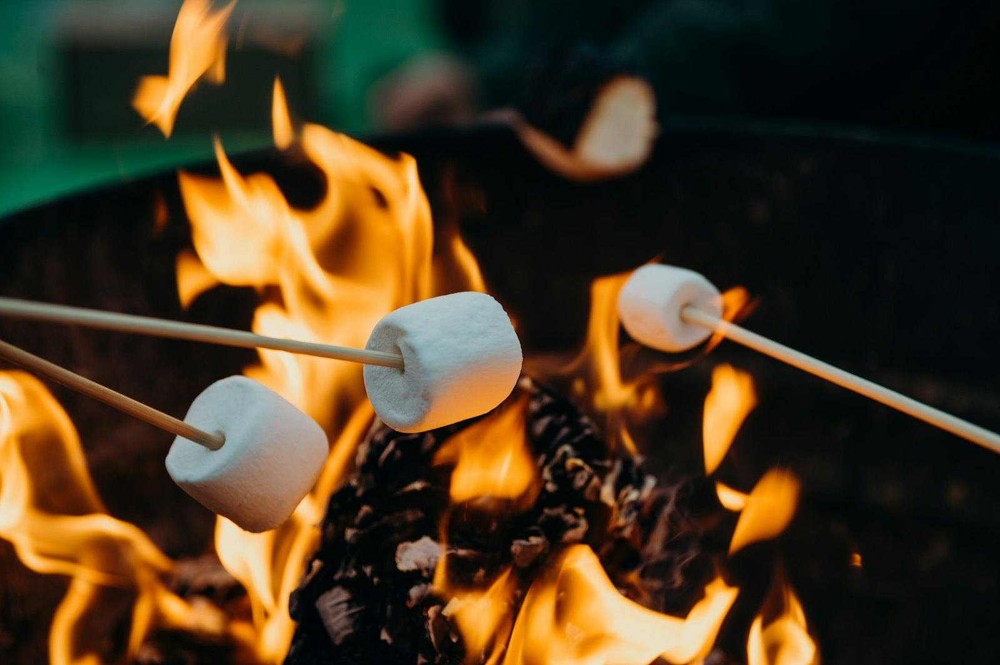
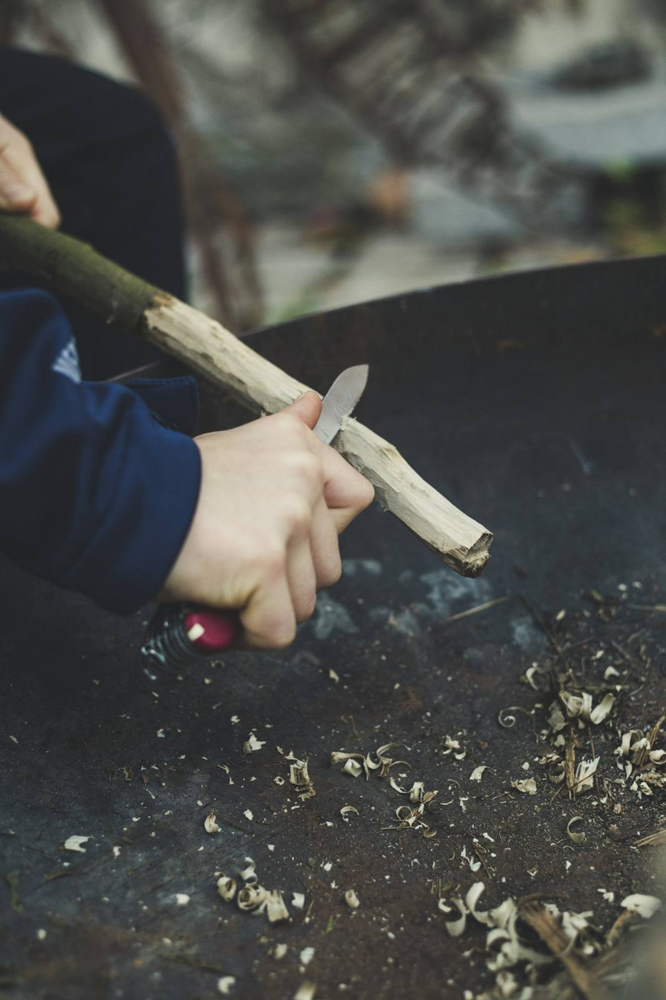

De begeleide bosmiddag
Drie uur in het bos, uitgewerkt tot op de minuut.
Gecertificeerde scoutingleiders draaien een volledig programma in een bos bij jou in de buurt. Jouw medewerkers lopen mee, zien hoe het werkt en houden het draaiboek.

Verloop
Zo ziet een middag eruit
Elk programma volgt dezelfde boog: aankomen, energie opbouwen, een dubbele piek in het hoofdspel, herstel, iets maken met de handen en tot rust komen rond vuur of verhaal.
Na 30 tot 40 minuten verlies je een groep. Met een wissel halverwege, nieuwe teams of een nieuwe regel, blijft iedereen erbij. Kinderen oefenen zo ook opschakelen en weer afschakelen, zonder dat het een les wordt.
De leiding zet de grenzen uit met lint. Een denkbeeldige lijn in het bos bestaat na twee minuten niet meer.
Bijvoorbeeld Hollandse leeuwen of stand in de mand.
Nieuwe teams, een nieuwe regel of een plotwending.
Een kampvuur, een hut of een zitplek.
Broodjes roosteren, weerwolven of verhalen vertellen.
Met een kort slotritueel, zodat de middag ergens eindigt.
Afspraken
Wat ik regel, en wat jij regelt
Ik regel
Het programma en het draaiboek, vooraf toegestuurd
Gecertificeerde scoutingleiding van een lokale scoutinggroep
Al het materiaal dat het programma vraagt, tot het markeerlint toe
Veiligheidsprotocol en een plan B voor slecht weer
Jij regelt
De groep, en medewerkers die meelopen
Kleding voor buiten, ook als het regent
[Afspraak over vervoer naar het bos volgt]
[prijs volgt]
Per programma, exclusief btw. Het eerste gesprek is vrijblijvend. Pas als we allebei weten wat er gebeurt, plannen we de middag.



Een middag zien is de snelste manier om te beslissen.
Vertel me iets over je vestiging en je groepen. Dan stel ik een programma voor dat past bij leeftijd en seizoen.